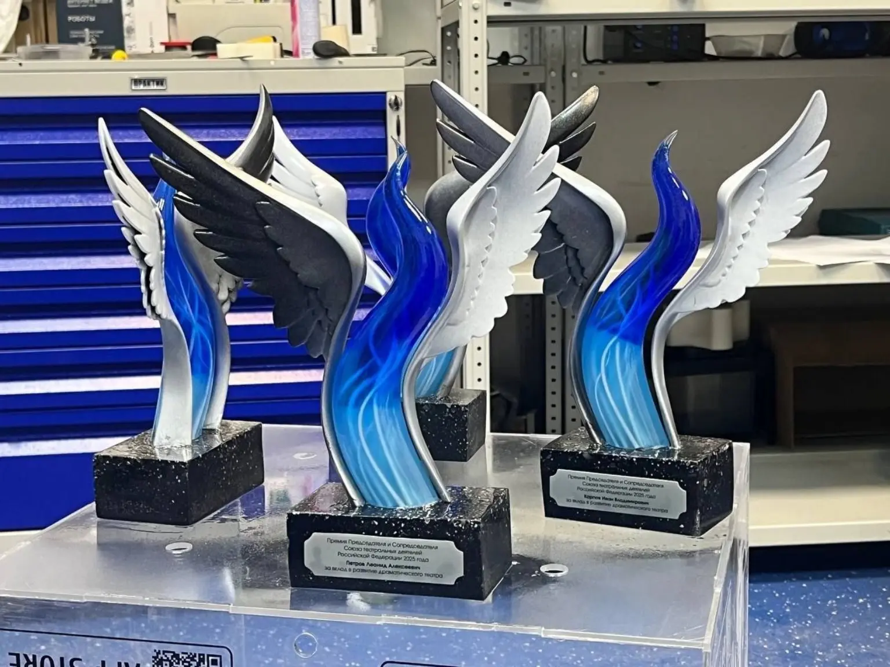
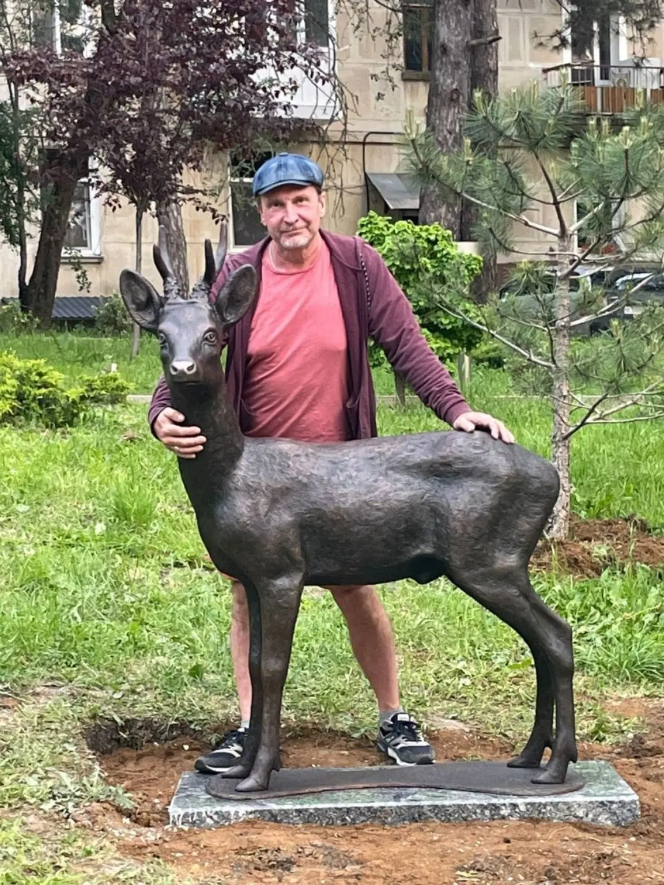

Технопарк РГСУ · Лаборатория
Промышленный
дизайн и инжиниринг.
Соединяем форму, конструкцию и технологии. Разрабатываем цифровые модели и создаём физические прототипы — для производства, исследований и обучения.
- От эскиза до готового образца
- Инженеры, дизайнеры и студенты — в одной команде
Оцифровать и восстановить геометрию
Изучить направление →Изготовить и проверить прототип
Подготовить производство →Присоединиться к проектам лаборатории
Студентам и преподавателям →01 / Направления работы
Одна лаборатория.
Весь путь изделия.
Можно пройти полный цикл или подключить команду к отдельному этапу: оцифровке, проектированию, изготовлению и проверке образца.
01
Промышленный дизайн и прототипирование
От требований и эскиза до CAD-модели и физического прототипа. Проверяем эргономику, компоновку, сборку и технологичность до запуска серии.
02
3D-моделирование
Создаём CAD-модели и художественную геометрию по ТЗ, чертежу, эскизу, фотографии или данным сканирования — под производство, визуализацию или печать.
03
3D-печать и постобработка
Проверяем модель, подбираем технологию и материал, печатаем, собираем и доводим поверхность до согласованного вида.
04
3D-сканирование и реверс
Оцифровываем предметы и людей, очищаем геометрию, восстанавливаем форму для контроля, доработки или повторного изготовления.
05
Скульптуры и арт-объекты
Создаём цифровую скульптуру по идее, эскизу или фотографии. Печатаем, собираем, шлифуем и окрашиваем до выставочного вида.
06
Кубки и награды
Разрабатываем авторскую форму под событие и бренд, согласуем образец, персонализируем и выпускаем серию.
07
Декор и инсталляции
Производим интерьерные объекты, реквизит и элементы экспозиций. Учитываем разбиение, крепления, вес, перевозку и монтаж.
08
AR/VR и интерактивный 3D
Создаём интерактивные прототипы, пространственные визуализации и обучающие сценарии на основе 3D-контента.
02 / Избранные проекты
Замысел. Геометрия.
Реальный объект.
Изделия для сцены, городской среды и организаций. В каждом разборе — задача, технология и результат.
 Реализовано01
Реализовано013D-моделирование · 3D-печать · фэшн-тех
Сценический костюм Анны Плетнёвой
Проект представлен Технопарком РГСУ
- 2 видео процесса
- 9 этапов в галерее

Реализовано02СТД России · полный цикл · 10 дней
Награда для премии СТД России
Проект представлен Технопарком РГСУ
- 10 дней
- Вручал Владимир Машков

Реализовано03Авторская скульптура · 3D-производство
Скульптуры Фёдора Паршина
Из портфолио команды STEP_3D
- Печать по сегментам
- Ручная доводка
 Проектная разработка04
Проектная разработка04Параметрический дизайн · интерьер
3D-арт для RED7
Проект представлен Технопарком РГСУ
- 4 композиции
- Проект скрытого крепления
В каталоге сохранены авторы и участники работ. Проекты лаборатории и опыт команды STEP_3D отмечены отдельно.
03 / Студентам и преподавателям
Учиться —
создавая настоящее.
От учебной модели к задаче с реальными ограничениями. В лаборатории можно освоить проектирование, изготовить первый прототип и включиться в работу СКБ.
Как присоединитьсяСтартовый кейс · 2–4 занятияДатчик
Датчик
движения стола
Печатный корпус, электроника и настройка. Один компактный проект объединяет несколько инженерных навыков.
Открыть учебный кейс04 / Как работаем
От постановки задачи
до проверенного прототипа.
В каждом проекте есть понятный результат этапа: требования, модель, образец или комплект документации.
- 01
Постановка задачи
Определяем назначение изделия, пользователя и результат ближайшего этапа.
- 02
Исходные данные
Изучаем эскизы, образцы, размеры и ограничения производства.
- 03
Состав работ
Согласуем этапы, срок, стоимость и критерии готовности результата.
- 04
Цифровая модель
Разрабатываем форму и конструкцию, проверяем сопряжения и сборку.
- 05
Физический прототип
Изготавливаем образец и проверяем его по согласованной программе.
- 06
Передача результата
Передаём изделие и предусмотренные проектом модели и документы.
05 / Контроль результата
Не только выглядит.
Соответствует задаче.
До начала работ определяем, какие параметры проверяем и что передаём по завершении этапа.
Геометрия
Размеры, масштаб, сопряжения и целостность модели.
Прототип
Компоновка, эргономика, сборка и выбранные рабочие свойства.
Изготовление
Материал, соединения, поверхность и комплектность.
Передача
Состав файлов, документация и согласованные критерии приёмки.
Университетская среда
Инженерия
с продолжением.
Лаборатория — часть Технопарка РГСУ. Здесь практические задачи становятся основой для профессионального обучения, студенческих разработок и сотрудничества с организациями.
Познакомиться с лабораторией →Перед началом
Коротко
о главном.
Можно прийти с одной идеей?+
Да. Начнём с назначения изделия, ограничений и первого результата, который нужно проверить. Эскиз или готовая 3D-модель необязательны.
Как определяется стоимость?+
По составу работ, сложности геометрии, материалу, размеру, количеству образцов и сроку. Стоимость и условия согласуются после разбора исходных данных.
Можно участвовать студенту без опыта?+
Да. Начните со стартового кейса и обсудите с лабораторией направление работы. Сложность следующего проекта выбирается с учётом подготовки.
Можно передать конфиденциальные материалы?+
Сначала напишите о необходимости конфиденциальности без приложения закрытых файлов. Порядок обмена материалами и условия соглашения согласуются отдельно.
06 / Сотрудничество
Начнём
с вашей задачи.
Расскажите, что нужно спроектировать, изготовить или изучить. Можно обратиться с идеей, эскизом, готовой моделью или учебным проектом.
Москва, ул. Беговая, 12
Москва, ул. Вильгельма Пика, 4, стр. 8
Площадку и время встречи согласуем заранее.
Контакты и схемы проезда